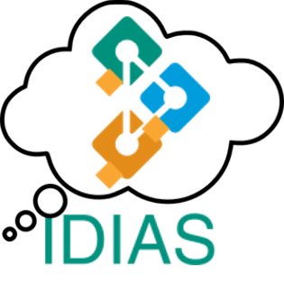
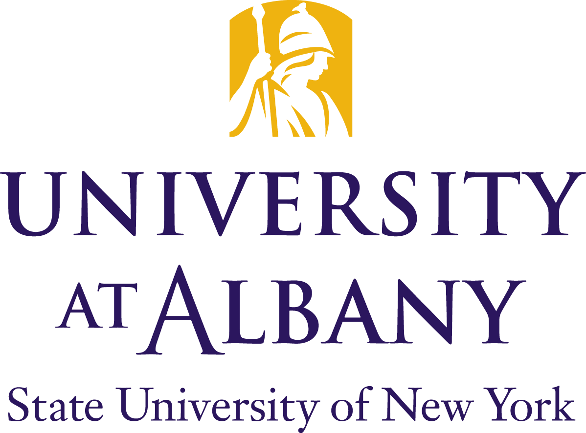
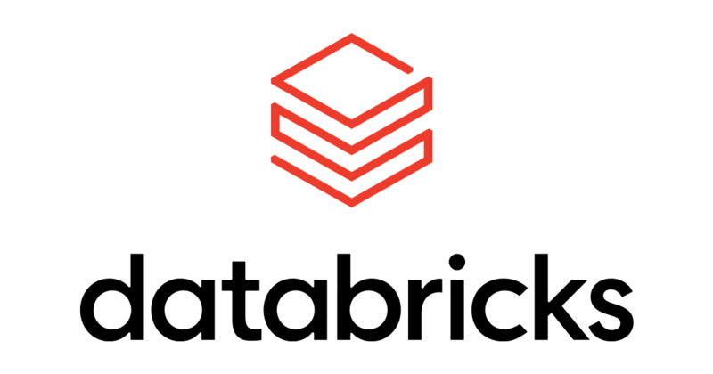

|
Charalampos Chelmis Associate Professor Department of Computer Science College of Nanotechnology, Science, and Engineering University at Albany - SUNY Contact Info
|
- 
-
I am the Director of the UAlbany Intelligent Big Data Analytics, Applications, and Systems (IDIAS) Lab. At IDIAS, we conduct cutting-edge research towards engineering a better world! We love getting involved with real-world problems for the simple reason that addressing grand societal challenge problems has the potential to result in tremendous social good, while significanly advancing Computer Science. Our contributions are in developing scalable and accurate algorithms and systems for characterization, detection, and prediction tasks involving complex, and often high-dimensional datasets. For details on current projects, visit the IDIAS Lab webpage!
-
I am always looking for talented students to join the group. Here is what we offer:
- World-leading research. Our research team is small, but publishes in top tier conferences and journals. Not only that, we are defining what the forefront of Machine Learning research should look like (e.g., learning from noisy labeled data).
- Freedom to think big and explore. Sponsored research does not need to be all about deliverables. Even though we work on targeted projects, we like to think big, abstract, and innovate.
- Projects with a purpose. We like to apply our research to real-world problems (e.g., homelessness) to make the world a little better one research project at a time.
- Career prospects. We work closely with (and learn from) industry partners (e.g., Google and Oracle). Acquire the skills to pursue a career in top private-sector companies in the US (e.g., Meta) or abroad (e.g., Jingdong).
Intrigued? Please read carefully before you email me:
- Prospective PhD Students
- Use "UAlbany Prospective PhD Student [Your name]" as your email subject (to help me filter out spams).
- Review (some of) my projects and papers, specify how your research interests match mine.
- Include both your
CV andtranscripts win your email. - I highly value mathematical and programming skills. Please remember to highlight your related experiences.
- Current UAlbany Students
- If you are a current UAlbany student and want to join my group, enroll in one of my courses and do well.
- Review (some of) my projects and papers for a potential match.
- Financial support is available but will be decided based on evidence of commitment and progress.
- Research
- Check out my GoogleScholar profile for a list of publications and my Curriculum Vitae [last updated in Feb 2022].
-
- ICSI-503: Algorithms and Data Structures, Fall'20, Fall'21, Fall'22, Spring'23, Fall'23, Spring'24, Fall'24, Spring'25, Fall'25. UAlbany
- ICSI-455/660: Semantic Web Technologies (topics in CS), Spring'21. UAlbany
- ICSI-432/532: Network Science, Spring'18, Spring'17, Spring'16. UAlbany
- ICSI-402: Systems Programming, Fall'19, Fall'18, Fall'17, Fall'16. UAlbany
- RSSW 630, (Guest Lecture), Fall'18. UAlbany (hosted by Prof. Wonhyung Lee)
- EE599 (Guest Lecture), Fall'14. USC (hosted by Professor K. Chugg)
- EE598 (Guest Lecture), Spring'13. USC (hosted by Professor V. K. Prasanna)
- CSCI 571: Web Technologies (TA), Spring'09, Fall'09. USC
- CSCI 101: Fundamentals of Computer Programming (TA), Fall'08. USC
- Distributed Systems I, Software Laboratory (TA), Fall'07. UPatras
- Software Laboratory (TA), Fall06. UPatras
- Tutorials and Invited Talks
-
- From Feature Selection to Instance-wise Feature Acquisition (with Dr. Daphney--Stavroula Zois), 13th SIAM International Conference on Data Mining (SDM24), 2024
- Socially Important Data Science - Lessons from Homeless Services Provision, Northeastern University, November 2022
- Robust Learning with Noisy Label Detection and Counterfactual Correction, UAlbany Artificial Intelligence Symposium, November 2022
- Cyberbullying Detection and Anticipation on Instagram, Facebook Research, October 2020
- Anti-Hate Speech Research: Hate Detection & Anticipation, Electronic Arts, October 2020
- Characterization, Detection, and Mitigation of Cyberbullying (with Dr. Daphney--Stavroula Zois), 13th ACM Web Science Conference, 2021
- Machine Learning Methods and Algorithms for High Dimensional and Networked Data, Northeastern University, 2019
- On-the-fly Feature Selection Classication of High-dimensional Data, University of Massachusetts Boston, 2019
- Characterization, Detection, and Mitigation of Cyberbullying (with Dr. Daphney--Stavroula Zois), 12th International Conference on Web and Social Media, 2018
- Popularity on the Web: From Estimation to Prediction (with Dr. Daphney--Stavroula Zois), IEEE International Conference on Big Data, 2017
- Academic Service
- Associate Editor
- Social Network Analysis and Mining, 2021 - present
- Journal of Parallel and Distributed Computing, 2019 - 2021
- Encyclopedia of Social Network Analysis and Mining, 2016, 2023
- Guest Editor, Journal of Parallel and Distributed Computing, Special Issue on Scalable Computing Systems for Big Data Applications, 2015
- IEEE/ACM International Conference on Advances in Social Networks Analysis and Mining (ASONAM), 2015 - 2017, 2019, 2022
- Special session on Data Science for Smart and Connected Communities (collocated with the 8th IEEE International Conference on Data Science and Advanced Analytics), 2021
- Symposium on Signal Processing and Machine Learning for Social Good (collocated with the 7th IEEE Global Conference on Signal and Information Processing), 2019
- International Workshop on Scalable Computing for Real-Time Big Data Applications, 2014 - 2019
- IEEE Parallel Learning Workshop, 2016
- Association for the Advancement of Artificial Intelligence (AAAI), 2022 - present
- Association for the Advancement of Artificial Intelligence (AAAI), 2020 - 2022
- International World Wide Web Conference (TheWebConf), 2015 - 2016, 2020 - present
- International AAAI Conference on Web and Social Media (ICWSM), 2018 - present
- ACM Web Science Conference (WebSci), 2020 - present
- IEEE/ACM International Conference on Advances in Social Networks Analysis and Mining (ASONAM), 2020 - 2021
- International Conference on Social Informatics (SocInfo), 2019 - present
- IEEE International Conference on Social Computing (SocialCom), 2012 - 2016
- High Performance Computing (HiPC), 2015 - 2019
- IEEE International Conference on Advances in P2P Systems (AP2PS), 2010 – 2012
- Workshop on Social Network Analysis in Applications (SNAA), 2019 - present
- PLOS ONE, 2016 - present
- IEEE Transactions on Artificial Intelligence, 2020 - present
- IEEE Transactions on Big Data, 2020 - present
- IEEE Transactions on Knowledge and Data Engineering, 2015 - present
- IEEE Transactions on Computational Social Systems, 2015 - present
- IEEE Transactions on Information Forensics & Security, 2016 - present
- IEEE Transactions on Internet Technology, 2016 - present
- Springer Social Network Analysis and Mining, 2019 - present
- International Joint Conference on AI - Pacific Rim International Conference on AI, 2020
- ASE International Conference on Social Informatics 2012
- IEEE International Conference on Social Computing, 2011
- ACM US Technology Policy Committee Member, 2021 - present
- The Swiss Innovation Lab, Advisory Board Member, 2018 - present
- The Food Pantries Software/Technical Advisory Committee, 2018
- CISE, 2017, 2019, 2021, 2022, 2023
- Charalampos Chelmis is Associate Professor of Computer Science at the University at Albany, State University of New York (SUNY), and the director of the Intelligent Big Data Analytics, Applications, and Systems Lab. His research focuses on data-intensive computing involving high-dimensional and or interrelated data, and social good applications. He is the recipient of several awards, including the DARPA Chikungunya challenge methodology award (2015), SUNY-B Faculty Research Award (2018), and UAlbany's Next Research Frontier Award (2019). Charalampos has published extensively in top computer science conferences and journals, and has co-organized tutorials, including for BigData'17 and ICWSM'18. He serves as Co-Chair, SPC, PC member or reviewer of international conferences including TheWebConf, AAAI, ASONAM, and ICWSM. In the past, he was, among others, a co-editor for the Springer Encyclopedia of Social Network Analysis and Mining. Charalampos earned his Ph.D. and M.Sc. degrees in Computer Science in 2013 and 2010, respectively from the University of Southern California, and B.S. in Computer Engineering and Informatics from the University of Patras, Greece in 2007. During 2014-2016, he was Research Associate with the Data Science Lab at the University of Southern California.
| Learning with Noisy Labeled Data |
| Hierarcical Multiclass Classification |
| Cyberbullying Detection |
| Enabling Machine Learning at Scale over Semantic Data |
| Community on Multimodality: Participatory Action, Service, and Support |
 |
 |
|  |
|  |
 |